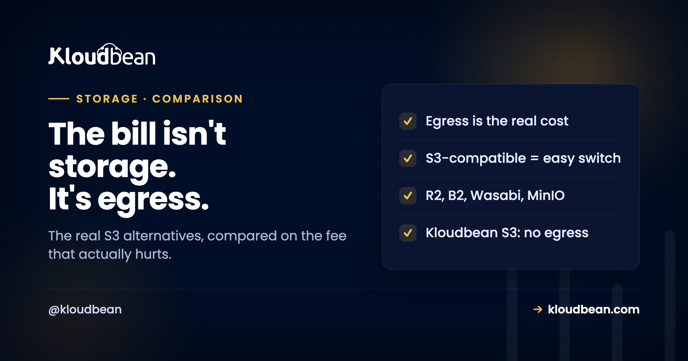

Cloud Storage Alternatives: The Object Storage Options Worth Knowing

If you're storing an app's files, user uploads, images, video, or backups, and you're looking for a cloud storage alternative, you're usually running from one of two things: a surprise egress bill, or lock-in to one big cloud. The good news is the object-storage market got competitive, and there are genuinely good options now, several of them speaking the same S3 API so you can switch with a config change rather than a rewrite. This guide compares the real alternatives for developers, on the things that actually decide the bill and the lock-in, then helps you pick.
For application storage, the strongest S3 alternatives are the S3-compatible ones you can move to without rewriting: Cloudflare R2 and Backblaze B2 (both known for low or no egress fees), Wasabi (flat pricing), Google Cloud Storage and Azure Blob (if you're already in those clouds), MinIO (self-hosted), and built-in object storage from a managed host like Kloudbean, which keeps the bucket in the same dashboard as your servers and databases and doesn't meter egress on it. The right pick usually comes down to egress fees and whether you want the storage near the rest of your stack.
First, which "cloud storage" do you actually mean?
A quick fork, because "cloud storage" means two very different things and this guide is about one of them.
If you want a Dropbox or Google Drive replacement to sync your documents and photos across devices, that's consumer file storage, and it's not what this article covers. What we're comparing here is object storage: the developer service where your application puts files programmatically, an S3 bucket and its equivalents. That's where user uploads, generated files, media libraries, static assets, and backups belong, reached over an API from your code rather than a desktop sync client. If you're building an app and wondering where the files should live so they survive deploys and don't bloat your server, you're in the right place. If you want to sync your holiday photos, you're not.
Why developers look for an S3 alternative
Three reasons come up again and again, and naming yours tells you what to optimise for.
The big one is egress fees. The major clouds charge little to store data and a lot to serve it out, often around nine cents per gigabyte, so a media-heavy or high-traffic app can see a bill where transfer dwarfs storage many times over. We pulled that math apart in the egress fees breakdown, and it's the number one reason people move. The second is lock-in: the more data you pile into one cloud, the more it costs to leave, which is a deliberate feature of the pricing, not an accident. The third is sprawl: your storage is one more separate product with its own console, billing, and access model, disconnected from where your app and database actually run. That last one is why some managed hosts now ship storage themselves. On Kloudbean a bucket is a tile beside your servers and managed databases on the same account, which removes a vendor rather than adding one. Different alternatives solve different ones of these, so hold your reason in mind as you read the options.
The main object-storage options, compared
Most of these speak the S3 API, which is the thing that makes switching realistic. Here's the honest lineup.
| Option | S3-compatible | Egress fees | Best for |
|---|---|---|---|
| AWS S3 | It's the standard | Yes, metered per GB | Teams already deep in AWS |
| Cloudflare R2 | Yes | No egress fees | Serving lots of data out cheaply |
| Backblaze B2 | Yes | Free up to a generous multiple of storage | Cheap storage with fair egress |
| Wasabi | Yes | No egress fee (with usage terms) | Predictable flat storage pricing |
| Google Cloud Storage | Partly (its own API + interop) | Yes, metered | Teams already on Google Cloud |
| Azure Blob | Via its own API | Yes, metered | Teams already on Azure |
| MinIO (self-hosted) | Yes | Your bandwidth bill | Full control, you run it |
| Kloudbean built-in S3 | Yes | No egress on its storage | Storage next to your app and DB |
A few honest notes on that table. The "no egress" options (R2, Wasabi, Kloudbean's built-in storage) each have their own shape: R2 built its whole pitch on free egress; Wasabi doesn't charge egress but has fair-use terms tied to how much you store; Backblaze gives generous free egress rather than truly unlimited. Terms change, so check the current pricing page of whichever you shortlist rather than trusting a number in a blog post, including this one. The self-hosted route (MinIO) removes provider fees entirely but hands you the operational job of running and scaling it. And the hyperscaler options (S3, GCS, Azure Blob) are excellent engineering with the egress model that sent you looking in the first place.
How to choose, in one pass
Match the option to the reason you started looking. It really is mostly that simple.
If egress is your problem (you serve a lot of data out), prioritise a no-egress or low-egress store: R2, Wasabi, Backblaze B2, or a host whose built-in storage doesn't meter egress. If lock-in is your worry, insist on S3-compatibility so your next move is a config change, not a migration, which rules in almost everything except the proprietary APIs. If sprawl is the pain, the deciding factor isn't the storage in isolation, it's whether the bucket lives in the same place as your servers, database, and app, so you're managing one platform instead of gluing four together. Built-in storage on a managed host covers both that and the egress question at once, which is the case for Kloudbean's buckets, though you should still check the terms rather than take my word for it. And if you genuinely want total control and have the ops appetite, self-hosting MinIO is legitimate, as long as you're honest that you've taken on running it. One trap to avoid: don't pick purely on the advertised per-gigabyte storage price. It's usually the smallest line on the bill. Egress and operational overhead are where the real money and time go.
Where the bucket sits changes more than the price per gigabyte
Pricing gets the attention because it's a number on a page. Placement gets almost none, and it quietly decides more of your bill and more of your ops.
Two mechanical reasons the bucket lives outside your app server, worth stating plainly because they're the root of most of the pain above. First, the app server's disk is scratch space. It gets replaced when you redeploy or rebuild, so files written there are on a timer whether you know it or not. Second, every read and write between your app and the bucket crosses a network, and the shape of that network sets both the latency and the meter. Same platform, and it's a short hop on infrastructure you're already paying for. Two different vendors, and it's the public internet with a per-gigabyte counter on at least one end.
That's the real argument for keeping storage with the rest of the stack, and it's the shape of Kloudbean's built-in S3-compatible buckets: same account and dashboard as the servers and the seven managed database engines, same access model, the S3 API so your existing SDK or CLI just gets a new endpoint and keys, and no metering on data-transfer-out. Two implementation details to know before you point a client at it, because they're the kind of thing you'd rather read now than debug later: it supports path-style bucket endpoints only, so virtual-hosted-style bucket domains aren't supported and some SDKs need forcePathStyle set; and access keys can be scoped read-only, write-only, or read plus write, and restricted by IP, so the uploader in your web app and the nightly backup job don't have to share one all-powerful key. Read that no-metering clause narrowly. It's about the built-in store. Managed Google Cloud Storage is a separate higher-tier thing on a dedicated cloud project, and it carries Google's own ingress and egress pricing. The practical setup is in S3-compatible object storage.
Four things no storage provider fixes for you, ours included:
- A public bucket that shouldn't be public. That's your access policy. Every vendor here will happily serve whatever you marked readable.
- Streaming every download through your app instead of handing out a signed URL. You pay for that in app bandwidth and CPU on any provider on this list.
- Deleting the wrong prefix. Know which seat belt your provider actually gives you. On Kloudbean S3 it's Object Deletion Protection, and it's enabled by default; bucket versioning isn't the mechanism here, because this storage doesn't support it (object versioning is an Enterprise Regional Storage Bucket feature, which is a regional GCS bucket). Elsewhere on this list, versioning is usually the answer and it's usually off until you switch it on. Either way, disable the protection and delete anyway and you're on your own: objects deleted while the lock is off can't be recovered.
- Uploading a 40MB hero image. Free egress doesn't make it fast for the person on a phone.
And the scope line: this whole page is about application object storage, the S3 category. If what you actually wanted was a desktop sync client for your documents, none of these are it, including ours.
Before this bites again
The cost mechanics behind all of this are in the egress fees breakdown. For what object storage even is and why files don't belong on the app server, S3-compatible object storage, and for the practical pattern, store user uploads in object storage. If you're weighing managed platforms more broadly, best managed cloud hosting.
Put your files where your app already lives.
Kloudbean gives you S3-compatible object storage with no egress metering on it, in the same dashboard as your servers and managed databases, so storage stops being a separate bill and a separate console. Start at kloudbean.com, or read how it works in S3-compatible object storage.
S3-compatible API · No egress on built-in storage · Same dashboard as your stack · Public and private buckets
FAQ
What is the best alternative to AWS S3?
There isn't one winner; it depends on why you're leaving. If egress fees are the problem, Cloudflare R2, Wasabi, or Backblaze B2 are popular for low or no egress. If you want storage next to the rest of your stack, a managed host's built-in S3-compatible storage fits. If you want total control, self-hosted MinIO works. Because most of these speak the S3 API, you can often switch with a configuration change rather than a rewrite.
Which cloud storage has no egress fees?
Cloudflare R2 is known for no egress fees, Wasabi doesn't charge egress under its usage terms, and Backblaze B2 offers generous free egress up to a multiple of what you store. Kloudbean's built-in S3-compatible storage also doesn't meter egress. Terms differ and change, so confirm the current pricing for whichever you choose, since some no-egress offers have fair-use conditions tied to your stored volume.
What does S3-compatible mean, and why does it matter?
S3-compatible means the storage speaks the same API as Amazon S3, so the AWS SDKs, the AWS CLI, and tools like s3cmd work against it with just a different endpoint and credentials. It matters because it makes switching providers realistic: instead of rewriting your storage code, you change configuration. It's also the main defence against lock-in, since your next move stays a config change rather than a migration project.
Why is AWS S3 egress so expensive?
Moving data across a global network has a real cost, but egress pricing is also a retention mechanism: cheap to put data in, pricey to serve or move it out, which discourages leaving. On a media-heavy or high-traffic app, egress can be many times the storage cost, which is why the bill often surprises people. It's the single most common reason developers look for an S3 alternative.
Is Backblaze B2 or Wasabi cheaper than S3?
Usually yes for the common case, mainly because of egress. Both price storage competitively and are far more generous on data transfer out, which is where S3 bills add up. The exact comparison depends on your ratio of stored data to data served, so run your own numbers using both the storage and the egress lines, not just the per-gigabyte storage price, which is the smallest part of most bills.
Can I self-host object storage?
Yes. MinIO is an S3-compatible object-storage server you can run on your own infrastructure, which removes provider fees entirely and gives you full control. The trade is that you take on running it: capacity, durability, backups, and scaling become your responsibility. It's a good fit if you have the operational appetite and a reason to keep storage fully in-house, and a poor one if you were trying to get away from managing infrastructure.
Does Kloudbean charge egress on object storage?
No, Kloudbean does not meter egress on its built-in S3-compatible object storage, so serving files out of that storage doesn't add a transfer bill. Note this applies to the built-in store specifically; managed Google Cloud Storage, available on higher tiers, follows Google Cloud's own transfer pricing. For most app storage needs, the built-in S3-compatible storage is the relevant option, and it sits in the same dashboard as your servers and databases.
How do I move my files off S3 to an alternative?
Because most alternatives are S3-compatible, you point a tool like rclone or the AWS CLI at both endpoints and sync the bucket across, then update your app's endpoint and credentials to the new store. Do an initial bulk copy, then a second pass to catch anything that changed, then cut over. Keep the old bucket until you've confirmed everything serves correctly from the new one. The S3-compatible API is what makes this a copy-and-reconfigure job rather than a rewrite.